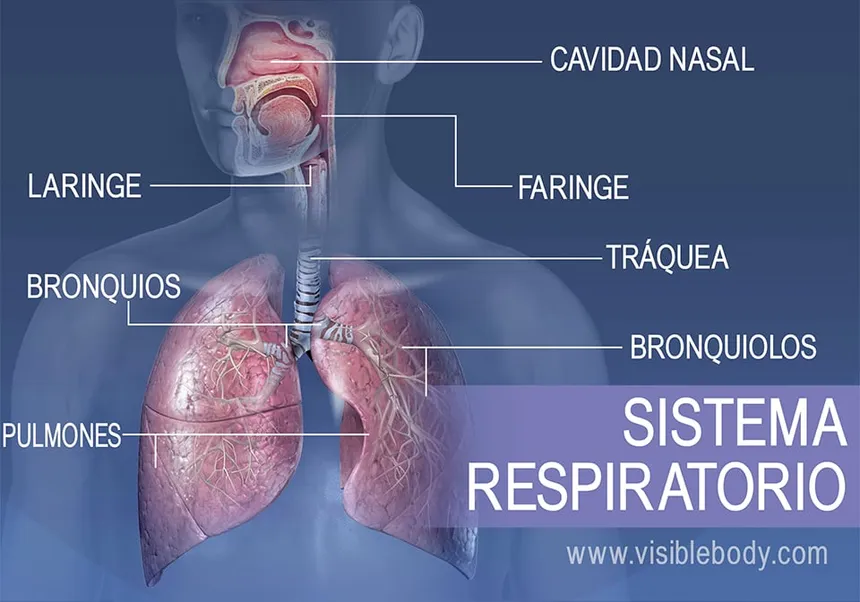

Introduction
The respiratory system is the set of organs responsible for bringing oxygen to the body's cells and eliminating carbon dioxide, a waste product of cellular metabolism.
Organs of the Respiratory System
-

- Nose and Mouth: Where the breathing process begins. The air is inhaled through the nose and/or mouth.
- Pharynx: Common channel for the passage of air and food.
- Larynx: Contains the vocal cords and facilitates the passage of air into the trachea.
- Trachea: Tube that carries air from the larynx to the bronchi.
- Bronchi: Tubes that carry air to the lungs.
- Lungs: Main organs of respiration where gas exchange occurs.
- Alveoli: Small sacs in the lungs where the exchange of oxygen and carbon dioxide takes place.
Functions of the Parts of the Respiratory System
Nose and Mouth
The nose and mouth allow air to enter the respiratory system. The nose filters, humidifies and warms the air before it reaches the lungs.
Pharynx
The pharynx is a common conduit for the passage of air into the trachea and food into the esophagus.
Larynx
The larynx is a structure that is located at the top of the trachea and contains the vocal cords. In addition to facilitating the passage of air into the trachea, the larynx is essential for sound production and phonation in humans. The vocal folds vibrate as air passes through them, producing sounds that are then modulated by the tongue and lips to form speech.
Trachea
The trachea is a fibrous and flexible tube that connects the larynx with the bronchi. It is composed of cartilage rings that provide rigidity and prevent it from collapsing during inhalation. The trachea is also lined by a mucosa that produces mucus to trap foreign particles and help in the process of cleaning the air we breathe.
Bronchi
The bronchi are two tubes that branch from the trachea and carry air to the lungs. Once inside the lungs, the bronchi subdivide into smaller and smaller bronchioles. This continuous branching allows air to reach specific areas of the lungs, thus ensuring efficient gas exchange in the alveoli.
Alveoli
Alveoli are small air sacs located in the lungs where gas exchange between air and blood occurs. They are surrounded by a network of blood capillaries. Inhaled oxygen passes through the thin walls of the alveoli and diffuses into the blood, while carbon dioxide, a waste product of cellular metabolism, diffuses from the blood into the alveoli to be exhaled.
Healthy breathing is essential for the well-being and optimal functioning of the body. An efficient respiratory system provides sufficient oxygen to the body's cells, which is essential for energy production through the process of cellular respiration. Additionally, it eliminates carbon dioxide, a metabolic waste product that can be harmful if it accumulates in excess in the body.
Good health of the respiratory system is also crucial to maintain acid-base homeostasis in the body and for the proper functioning of the cardiovascular system. Maintaining proper breathing through practices such as conscious breathing and regular physical exercise contributes to a healthier and more active life.
Importance of Healthy Breathing
Healthy breathing is crucial for providing enough oxygen to the body's cells and removing carbon dioxide. This is essential for the optimal functioning of the body.